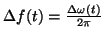
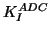
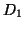

Next: Influence of experimental noises
Up: How the virtual machine
Previous: Frequency demodulation and cantilever
Contents
Distance regulation
Figure 10:
Automatic Distance Control.
|
|
The

signal coming from
the frequency demodulator (see figure 9) is used to regulate
the distance  between the cantilever and the surface in order
to satisfy the frequency setpoint
between the cantilever and the surface in order
to satisfy the frequency setpoint  (see figure 10)
defined by the user [32,33]. Following
this rule, one gets the following expression:
(see figure 10)
defined by the user [32,33]. Following
this rule, one gets the following expression:
where we find, like in the AGC (see equation 24), a PI
(Proportional-Integral) system with gains  and
and

defined by the user. 
is an ajustable offset in distance.
Lev Kantorovich
2005-08-04